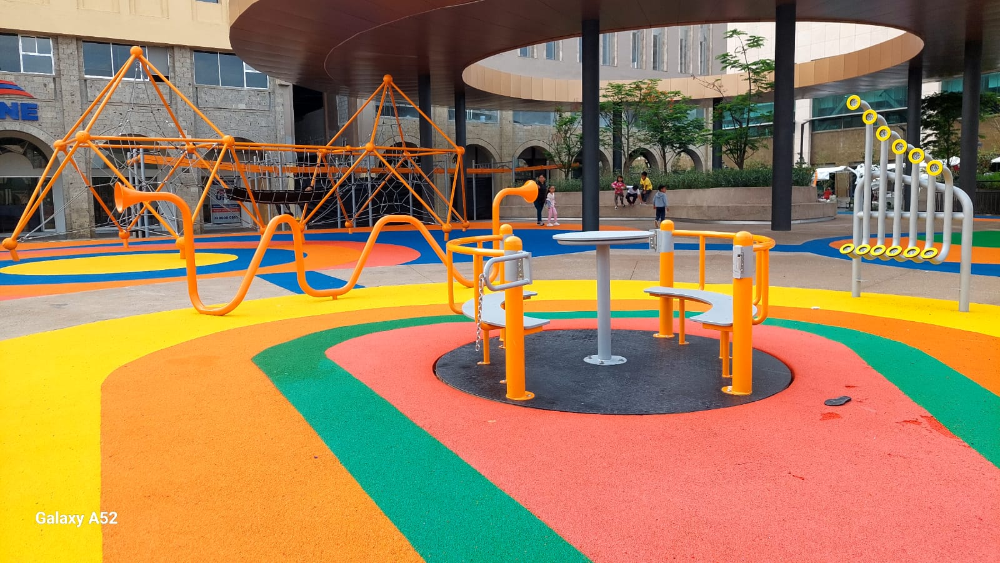
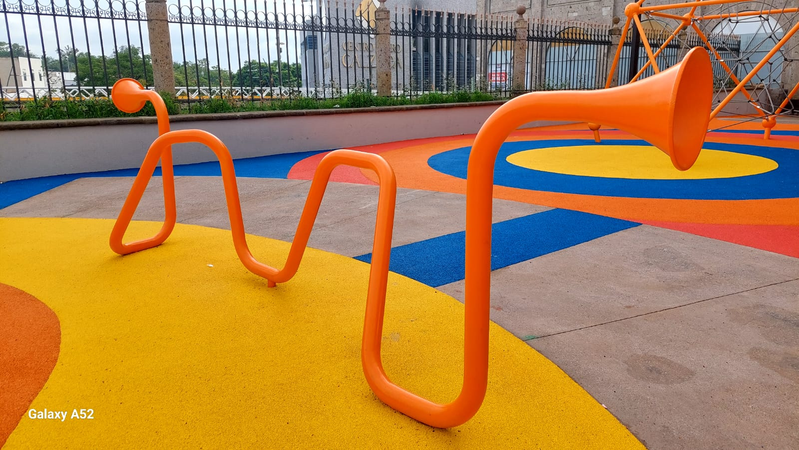
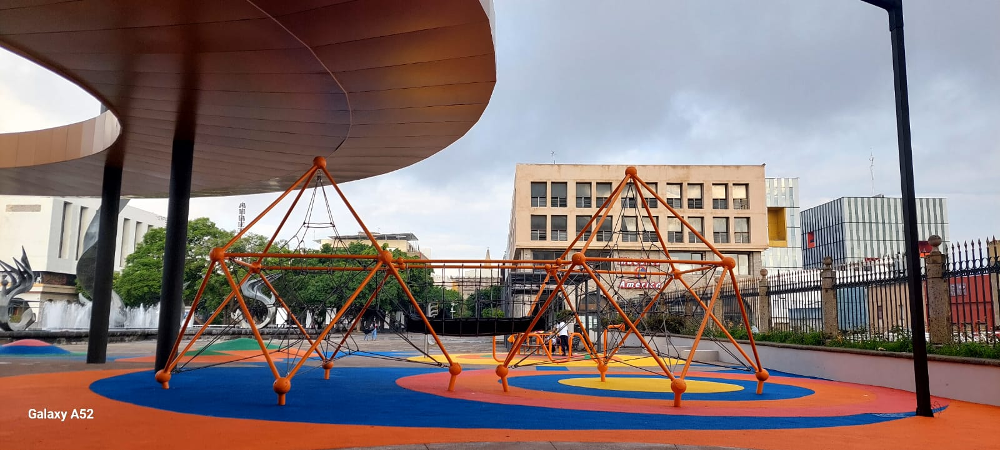

La Nueva Zona Infantil de Plaza Tapatía
La Plaza Tapatía cuenta ahora con una nueva zona infantil diseñada para ofrecer espacios seguros y recreativos para niñas, niños y familias que visitan el Centro Histórico de Guadalajara.
Este proyecto forma parte de las mejoras urbanas realizadas en la ciudad con el objetivo de modernizar los espacios públicos y promover la convivencia familiar.
La zona se encuentra frente al Hospicio Cabañas, uno de los monumentos más importantes de Guadalajara, permitiendo que las familias disfruten de un ambiente cultural y recreativo al mismo tiempo.
Los nuevos juegos, áreas de descanso y espacios verdes han convertido este lugar en uno de los puntos favoritos para visitantes y habitantes de la ciudad.
Renovación de Plaza Tapatía
Plaza Tapatía es uno de los corredores peatonales más importantes de Guadalajara. Durante años ha sido un punto de encuentro para turistas y ciudadanos.
La reciente renovación incluyó mejoras en iluminación, accesibilidad, mobiliario urbano, áreas verdes y espacios recreativos.
La incorporación de la nueva zona infantil representa uno de los proyectos más destacados de esta transformación urbana.
Datos Rápidos
| Característica | Información | |
|---|---|---|
| Trepador de red tridimensional, domo geométrico de cuerdas o telaraña elíptica. | Escalada multidireccional: Los niños entran al juego y se trepan por el entramado de cuerdas internas, pudiendo moverse en cualquier dirección (arriba, abajo, hacia los lados o por el centro). | |
 |
Carrusel inclusivo, carrusel adaptado o carrusel giratorio integrado. | Giro: Los niños se sientan en las bancas internas y se impulsan con el manubrio o la mesa central para girar. |
 |
Tubo parlante, teléfono de juegos o megáfono acústico de parque. | Comunicación: Dos niños se colocan en cada extremo del tubo de metal (uno de cada lado del parque). |

|
Trepador de red, estructura de escalada libre o red de equilibrio. | Órgano musical urbano, tubos sonoros o juego interactivo de percusión. |
 |
Pirámide de cuerdas doble, trepador geométrico o telaraña gigante con puente | Ascenso: Los niños escalan las redes exteriores de las dos estructuras piramidales de color naranja. |

|
Tirolesa urbana, carril de deslizamiento o juego de péndulo en riel. | Desplazamiento: Los niños se suben a los diferentes tipos de asientos (como el péndulo amarillo o la canastilla negra) y se deslizan a lo largo del riel superior de color naranja. |

|
Órgano musical urbano, tubos sonoros o juego interactivo de percusión. | Percusión: Los niños golpean los tubos metálicos o las boquillas amarillas inferiores utilizando las manos o baquetas integradas para generar sonido. |
Principales Atracciones
- Juegos infantiles modernos: espacios seguros para niñas y niños.
- Áreas verdes: ideales para el descanso y convivencia.
- Fuente renovada: uno de los principales atractivos visuales.
- Espacios accesibles: diseñados para toda la familia.
- Iluminación moderna: mejora la seguridad y la imagen urbana.
Datos Curiosos
La Plaza Tapatía conecta importantes puntos históricos del centro de Guadalajara.
El Hospicio Cabañas es considerado Patrimonio de la Humanidad por la UNESCO.
La nueva zona infantil busca atraer a más familias y visitantes al corazón de la ciudad.
El proyecto forma parte de una estrategia de recuperación de espacios públicos.